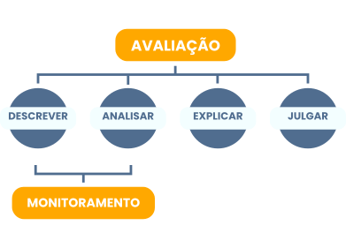

TÓPICO 1
MONITORAMENTO E AVALIAÇÃO NA GESTÃO EM SAÚDE
TÓPICO 1
MONITORAMENTO E AVALIAÇÃO NA GESTÃO EM SAÚDE
Clique em cada etapa e conheça o que significam.
Como podemos observar, a avaliação envolve as etapas de descrição, análise, explicação e julgamento.
Já o monitoramento, por sua vez, compreende as etapas de descrição e análise de determinada intervenção e de seus efeitos.